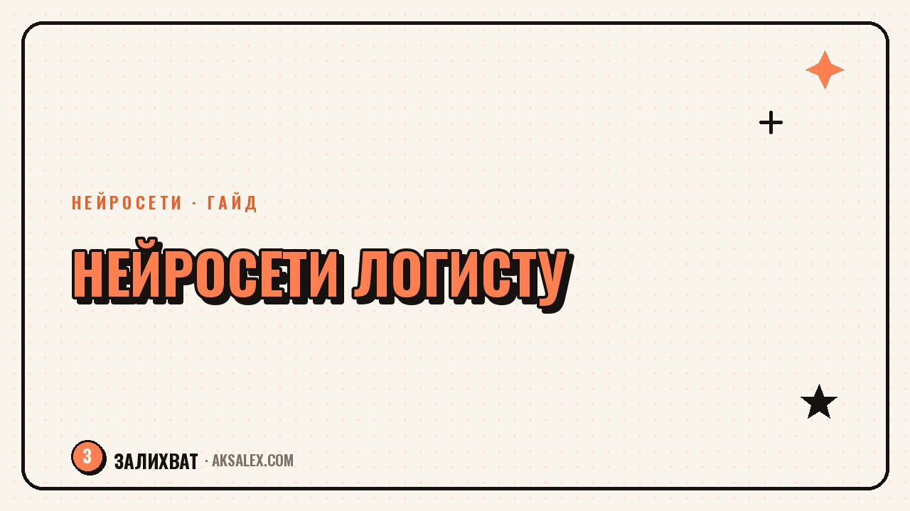

Нейросети для логиста: маршруты, склад и документы

Работа логиста - это постоянный поток однотипной рутины: собрать маршрут, свериться с остатками на складе, заполнить накладную, ответить клиенту на вопрос 'где моя посылка'. Каждая задача сама по себе простая, но их много, и именно на количестве теряется день. Нейросети не заменят систему учёта склада и не станут диспетчером вместо тебя, но здорово разгружают текстовую и расчётную рутину вокруг основной работы.
Какие задачи логиста реально решает нейросеть
У логиста обычно три слоя работы: планирование (маршруты, загрузка транспорта, графики), учёт (остатки, движение товара, инвентаризация) и документы (накладные, счета, переписка с клиентами и перевозчиками). Нейросети сильнее всего именно в третьем слое - там, где нужно быстро прочитать, написать или сравнить текст. В первых двух слоях у тебя скорее всего уже есть специализированная TMS или WMS-система, и нейросеть здесь работает как помощник рядом с ней, а не замена.
Отдельно про маршруты: для простой задачи из нескольких точек чат-модель может прикинуть логичный порядок текстом. Но для реальной оптимизации с десятками адресов нужен специализированный алгоритм маршрутизации, а не языковая модель - она не считает расстояния и время в пути математически точно.
Где нейросеть экономит больше всего времени
- Оформление накладных и сопроводительных документов по шаблону из голосовой заметки или черновика
- Быстрый ответ клиенту на типовой вопрос о статусе доставки
- Разбор претензии или жалобы и подготовка ответа в деловом тоне
- Перевод переписки с зарубежным перевозчиком или таможенным брокером
Как оформлять документы с нейросетью: пошагово
Самый простой способ начать - взять уже существующий шаблон документа (накладная, акт, коммерческое предложение перевозчику) и показать его нейросети вместе с данными конкретной поставки. Дальше модель подставляет данные в нужные поля и формулирует сопроводительный текст, а ты проверяешь цифры.
Разбор по шагам
- Даёшь модели шаблон документа и данные поставки (адреса, вес, объём, сроки)
- Просишь заполнить документ строго по шаблону, без добавления лишних пунктов
- Отдельно просишь написать короткое сопроводительное письмо клиенту или перевозчику
- Проверяешь цифры и реквизиты вручную перед отправкой - ошибка в накладной стоит дороже, чем пять минут проверки
- Сохраняешь удачные формулировки как заготовку для следующего раза
Нейросеть ускоряет написание документа, но не проверяет его юридическую корректность. Подпись и ответственность за то, что ушло клиенту или в налоговую, всегда на тебе - проверка цифр перед отправкой не обсуждается.
Сравнение инструментов для разных задач логиста
Для логиста важно разделять задачи по типу: расчётные задачи нужны отдельной системе, а текстовые закрывает обычная нейросеть-чат. Вот как это распределяется по инструментам.
| Задача | Подходящий инструмент | Что учесть |
|---|---|---|
| Оптимизация маршрута по многим точкам | Специализированный сервис маршрутизации | Нейросеть-чат не считает расстояния точно |
| Заполнение накладных и писем | Чат-модель с загрузкой шаблона | Проверяй цифры и реквизиты вручную |
| Ответы клиентам по статусу | Чат-бот на сайте или в мессенджере | Подключай к реальным данным трекинга, а не угадыванию |
| Перевод переписки с иностранным партнёром | Переводчик с ИИ | Уточняй отраслевые термины отдельно |
Частые ошибки при внедрении нейросетей в логистике
Первая ошибка - ждать от чат-модели точного расчёта маршрута или остатков на складе, как от специализированной системы: это разные инструменты, один считает, другой пишет и читает текст. Вторая ошибка - загружать в публичный чат документы с персональными данными клиентов без проверки, что сервис не использует эти данные для обучения - лучше обезличивать данные перед загрузкой. Третья ошибка - полностью доверять автоматический ответ клиенту без проверки, особенно если речь о сроках или компенсации: модель может сформулировать обещание, которое компания не готова выполнить.
С чего начать внедрение, если раньше не пробовал
Не нужно сразу перестраивать всю работу склада. Начни с одной повторяющейся текстовой задачи - например, ответов на типовые вопросы клиентов или заполнения однотипных писем перевозчикам. Попробуй неделю, посчитай, сколько минут сэкономил, и только после этого расширяй список задач. Такой постепенный подход снижает риск ошибки на реальной поставке и даёт понятный результат, который можно показать руководству.
И главное правило - нейросеть встраивается в существующие процессы учёта и маршрутизации, а не заменяет их. Если в компании уже работает TMS или WMS, нейросеть дополняет её текстовым и переговорным слоем, экономя часы на рутине, которая раньше отнимала внимание от действительно сложных решений.
Частые вопросы
Может ли нейросеть сама построить оптимальный маршрут доставки?
Для простого маршрута из нескольких точек чат-модель может прикинуть логичный порядок, но для точной оптимизации по расстоянию, времени и загрузке транспорта нужен специализированный сервис маршрутизации - языковая модель не считает это математически.
Безопасно ли загружать данные клиентов в нейросеть для составления документов?
Персональные данные (адреса, телефоны, паспортные данные) лучше обезличивать перед загрузкой в публичный чат или использовать корпоративную версию сервиса с гарантией, что данные не идут на обучение модели.
Заменит ли нейросеть WMS-систему учёта склада?
Нет, нейросеть не ведёт учёт остатков и движения товара - для этого нужна специализированная система. Нейросеть может помочь с текстовой частью: отчётами, письмами, разбором претензий.
Как нейросеть помогает с таможенными документами?
Она ускоряет перевод переписки с иностранным партнёром и помогает заполнить документ по шаблону, но итоговую корректность документа для таможни всегда проверяет специалист - ошибка здесь может остановить поставку.
Стоит ли подключать чат-бота для ответов клиентам о статусе доставки?
Да, если бот подключён к реальным данным трекинга, а не формулирует ответ наугад. Для сложных или спорных вопросов (задержка, компенсация) лучше передавать диалог человеку.
Раз тема оказалась полезной, вот что почитать следующим. Нейросети для трейдера: разбор новостей, отчётов и своих сделок без лишних часов за экраном.
Читать статью →а не вручную